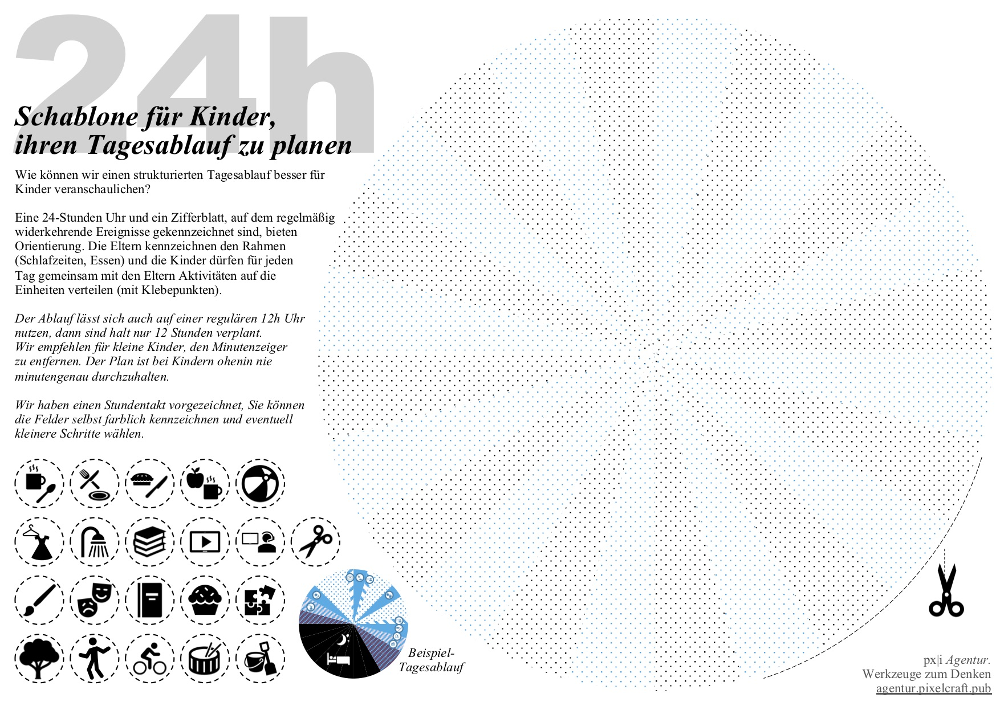

eine Anleitung als PDF zum Download
Die Arbeit zu Hause bringt besondere Belastungen für Menschen mit Kindern. Respektieren Sie, dass die Ausnahmesituation die Produktivität von Eltern dramatisch beeinträchtigt. Gehen Sie das Problem aktiv an und formulieren Sie gemeinsam angepasste Erwartungen. Scheitern gehört zum Ausprobieren und Lernen dazu. Machen Sie das beste daraus.
Niemand kann mit voller Aufmerksamkeit gleichzeitig Arbeit und Kinderbetreuung leisten. Wir wollen ein paar Hilfestellungen und Erfahrungen anbieten, wie gut geplante Struktur die Belastung etwas milder gestalten kann.
zur Schablone für Tages-Planung
Unternehmen tragen Verantwortung für Ihre Angestellten. Aber auch die Menschen in Führungspositionen müssen sich erst mit der Krise arrangieren. Seien Sie nachsichtig mit sich und anderen. Und denken Sie daran: Menschen gehen sehr unterschiedlich mit Stress um.
Jakob: Offenlegung - geplant sollte dieser Beitrag schon letzte Woche erscheinen. Aber neben der Ablenkung der Corona-Thematik musste ich erst selbst ein paar mal an der Aufteilung von Haushalt und Kinderbetreuung mit meiner Partnerin scheitern, bis wir die Ansprüche von zwei Vollzeit-Führungsaufgaben mit unserem Privatleben koordiniert hatten.Realistisch sind mindestens ein paar Wochen ständiger Abgelenktheit, wo niemand normal produktiv ist. Im Gegenteil. Wenn Sie jetzt den sofortigen Übergang in eine neue Normalität einfordern und vorleben, beschwören Sie den völligen Zusammenbruch mit leichter Verzögerung. Erfahrungen aus Krisensituationen zeigen, dass Sie damit Stress-Schulden für die geistige Gesundheit aufbauen. Es droht der Burn-Out.
Bieten Sie neben Hilfe zur Umstellung auf neue Arbeitsformen auch Unterstützung für besondere psychologische Bedürfnisse an. Ihr wichtigstes Werkzeug für die Krise ist Empathie.
Tipp: ein Angebot der Stiftung Deutsche Depressions-Hilfe ist ausnahmsweise unbürokratisch per App freigeschaltet. Professionelle Unterstützung zur geistigen Gesundheit ist von Unternehmen selbst schwer zu leisten. Ermuntern Sie Ihre Belegschaft dazu, Stress ernst zu nehmen und verweisen Sie auf entsprechende Angebote.
Geben Sie Ihren Angestellten die passenden Werkzeuge an die Hand, um für die neuen Anforderungen gerüstet zu sein. Stellen Sie Büromaterial und Geräte, um die Belastung zu minimieren.
Menschen neigen angesichts der Erfahrung von Kontrollverlust dazu, sich Kontrolle durch Konsumverhalten zurück zu holen. Das ist vor allem Medienkonsum. Permanente Suche nach Information, die eine Katastrophe in immer dramatischeren Details zeichnet. Helfen Sie Ihren Angestellten, sich diesem Sog zu entziehen und sich aneinander aufzurichten. Bieten Sie einen Ruhepol in der Gegenwart als Ausgleich zu einer unbestimmten Zukunft. Ermuntern Sie sozialen Austausch und Auszeiten zur Entspannung und körperlicher Betätigung.
Lesematerial: Das Jahoda Bauer Institut fasst Marie Jahodas Arbeit über Arbeit zusammen. Erwerbstätigkeit leistet in unserer Gesellschaft einen wichtigen Beitrag zu Persönlichkeits-Entfaltung und Selbstwert. Tagesrhythmus, sozialer Horizont und Zusammenhalt werden maßgeblich von Arbeit bestimmt. Diese Verankerungs-Funktion sollten Sie auch für Fernarbeit so weit wie möglich erhalten und pflegen.
Tipp: Die Flucht in soziale Medien ist keine Auszeit, dort setzen Sie sich nur noch mehr Stress aus. Suchen Sie lieber direkten sozialen Kontakt und telefonieren Sie oder schreiben einen Brief. Denken Sie daran, sich selbst zu versorgen. Der psychologische Stress der Unsicherheit ist enorm. Setzen Sie sich nicht noch selbst unter Druck: Es ist OK, wenn Sie Dinge liegen lassen und Ihren normalen Ansprüchen nicht gerecht werden. Irgendwann werden die neuen Umstände Normalität. Tanken Sie Kraft, wann immer möglich. Gönnen Sie sich Auszeiten!
Jakob: Die Verantwortung, ausgefallene Schulbildung selbst zu leisten, ist ein weiterer Konflikt und einen eigenen Schwerpunkt wert. Meine persönliche Meinung: Lassen Sie sich nicht vom Leistungsdruck anstecken. Die Situation wird sich gesellschaftlich und politisch ohnehin noch mal neu sortieren. Legen Sie lieber Wert darauf, Empathie und Solidarität vorzuleben und Ihr Kind an Ihrem eigenen Lernprozess zu beteiligen. In keiner Schule lernen wir so viel über systemische Zusammenhänge, wie aus der aktuellen Situation. Ihre erste Priorität sollte sein, die Situation zu Hause zu stabilisieren. Kinder spüren die Angespanntheit auch, wenn sie noch zu jung sind, die Zusammenhänge zu begreifen. Sie werden ihre Frustration vor allem über Sie ausdrücken. Das bedeutet Wut, Tränen, aber auch Versöhnung. Nehmen Sie sich Zeit zum Trösten und nehmen Sie offen gezeigte Emotionen als Zeichen, dass Ihre Kinder Ihnen vertrauen.
Struktur hilft Eltern und Kindern, Halt in der Unsicherheit zu finden. Geben Sie sich Ankerpunkte im Tagesablauf, an denen Sie sich orientieren können. Geben Sie sich ausreichend Flexibilität, diese Anker ein wenig nach vorne oder hinten zu schieben, wie es gerade passt.
Lesematerial: Die Psychologie des Umgangs mit Quarantäne (Fachartikel, Englisch) The psychological impact of quarantine and how to reduce it: rapid review of the evidence. Planen Sie Abwechslung, bilden und erhalten Sie besonders erfüllende Routinen und suchen Sie sich Herausforderungen, in denen Sie Kontrolle und Erfolgserlebnisse erleben können. Sport, Sprachen oder Musik sind für viele Menschen so eine Erfüllung. Nehmen Sie sich etwas vor, was Sie bislang immer aufgeschoben hatten.
Gönnen Sie sich und Ihrer Familie gesunde, regelmäßige Mahlzeiten, ausreichend Schlaf und körperliche Bewegung.
Im besten Fall können Sie die Betreuungsarbeit aufteilen. Treffen Sie hier klare Absprachen, vielleicht schreiben Sie ein Manifest der gemeinsamen Arbeit zu Hause, wie Sie es für die Fernarbeit geschrieben haben. Passen Sie es an, wenn Sie wieder dazu gelernt haben. Jede Woche.
Suchen Sie gemeinsam mit Ihrem Kind Struktur und helfen Sie einander, diese Struktur im Alltag sichtbar zu machen. Bringen Sie Ihre Kompetenz aus Projektmanagement und Basteln zusammen und gestalten gemeinsam einen Tag.
Strukturieren Sie einen groben Takt um die Essenszeiten und Schlafen, und was Sie sonst an regelmäßigen Ritualen in Ihrer Familie pflegen. Lassen Sie Ihr Kind dann mitentscheiden, welche Aktivitäten auf die unverplante Zeit für den aktuellen Tag verteilt werden sollen. Unsere Schablone hat dafür 24h wie ein Zifferblatt kreisförmig angeordnet, wo der Ablauf für alle sichtbar festgehalten wird.

eine Schablone als PDF zum Download
Normalerweise entwickeln wir Visualisierungen und anderen Methoden zur besseren Verständigung für professionelle Anwendung. Hier dann halt mal zur privaten Nutzung. Visualisierungen sind Denkwerkzeuge. Die helfen Kindern und Erwachsenen, sich Zusammenhänge zu vergegenwärtigen. Wir wollten mit einer Visualisierung des Tagesablaufs Zeit besonders anschaulich machen. Dafür zerlegen wir den Tag in 24 Stunden. Das leisten normale Uhren leider nicht. Also bauen wir unsere eigene Uhr.

Link zu Artikel bei Amazon. Link ohne Affiliate-Tracking: Wir verdienen nichts daran. Zum Glück gibt es Uhren, die für ein 24-Stunden-Zifferblatt gedacht sind. Dort können Sie einen ganzen Tag einzeichnen. Kleben Sie Ihren Plan über das reguläre Zifferblatt und entfernen Sie den Minutenzeiger. Minutengenaue Planung ist mit Kindern ohnehin wenig erfolgversprechend, dafür ist mit nur einem Zeiger der Plan viel mehr im Vordergrund als die Zeitmessung. Die Aktivitäten können Sie dann immer wieder neu außen auf der Uhr sortieren.
Verteilen Sie Arbeit um die Bedürfnisse Ihrer Kinder und Ihrer Gesundheit herum. Wir haben einen Beispielplan entworfen, wie im besten Fall die Arbeitszeit und Betreuungszeit von zwei Elternteilen zu Hause gerecht verteilt werden kann.
eine Anleitung als PDF zum Download
Jakob: Das ist die Absprache, die ich mit meiner Partnerin mit zwei Wochen ausprobieren und nachbessern gefunden habe. Wir wollten Fürsorgearbeit gleich verteilen und trotzdem noch unseren jeweiligen Führungsaufgaben im Betrieb nachkommen können. Oder es zumindest versuchen. Wir erwarten nicht, dass unsere Angestellten nun ebenso am Wochenende oder Abends arbeiten. Das ist unglücklich, wenn wir das vorleben, aber perfekte Lösungen finden wir im Moment nicht. Dieser Plan ist eine sehr privilegierte Idealvorstellung. Nur wenige Menschen können so selbstbestimmt über ihre Zeit und ihre Aufgaben verfügen. Wer es kann, darf sich gerne am Beispiel orientieren. So können wir besser füreinander da sein.
Der Plan ist außerdem Grundlage für die Visualisierung des Rhythmus, den wir in unserer Agentur gefunden haben, die verschiedenen Tagesabläufe zu koordinieren.
Jakob: Wir haben uns gegen Kurzarbeit entschieden, um die finanzielle Belastung nicht auf Familien abzuwälzen. Statt dessen zahlen wir weiter volle Gehälter, so lange wir können. Finden Sie einen Arbeitsrhythmus, der den Bedürfnissen Ihrer Belegschaft gerecht wird. Respektieren Sie Freizeit - die ist meist ohnehin nicht wirklich frei, sondern derzeit mit anderen Aufgaben gefüllt. Dabei sind ausgeruhte Menschen produktiver, kreativer und machen weniger Fehler.

Suchen Sie bei reduzierter Verfügbarkeit einen gemeinsamen Takt, wo gleichzeitiges Arbeiten und Absprache verlässlich möglich ist. Diese gemeinsame Zeit ist besonders kostbar. Schützen Sie sie, indem Sie so viel Belastung wie möglich an anderer Stelle wegnehmen und Flexibilität durch nicht-gleichzeitige Arbeit bevorzugen.
Helfen Sie Ihrer Belegschaft, Grenzen zu ziehen und Freizeit zu schützen. Bieten Sie, wenn möglich, Geräte an, die ausschließlich für die Arbeit zur Verfügung stehen. Damit der Arbeitsrechner auch zugeklappt werden kann und nicht noch E-Mails auf privaten Geräten noch am Feierabend Aufmerksamkeit fordern. Trennen Sie wenigstens die Kanäle, auf denen Sie beruflich Informationen austauschen, von Kanälen, die auch privat genutzt werden.
Wir erwarten bei Paaren mit Kleinkindern 50% der Arbeitsleistung. Das kommunizieren wir absichtlich offensiv, damit unsere Forderung auch als Beitrag zur Gleichberechtigung eingesetzt werden kann: Es soll nicht eine Frau ihre Arbeit vernachlässigen, weil die Arbeit ihres Partners einen höheren Stellenwert bekommt.
Für Alleinerziehende und Menschen, deren Partner oder Partnerin tatsächlich eine systemrelevante Aufgabe während der Krise übernehmen, finden wir individuelle Lösungen.
Gemeinsam schaffen wir das. Wir stehen für Rückfragen und professionelle Unterstützung in der schwierigen Zeit gern zur Verfügung. Wir finden schon eine Lösung, auch für besondere Bedürfnisse zu Umsetzung und Bezahlung.
Kontakt: jakob [at] pixelcraft.pub
Bleiben Sie optimistisch, bleiben Sie pragmatisch, bleiben Sie solidarisch!